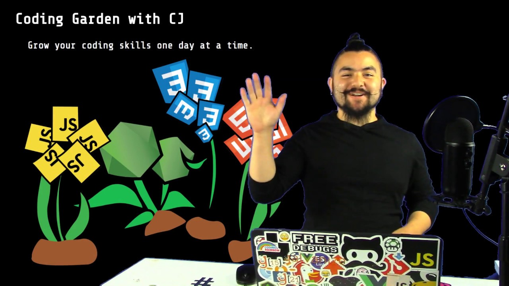
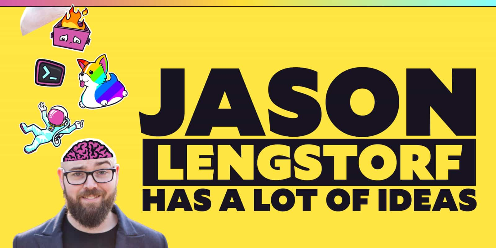
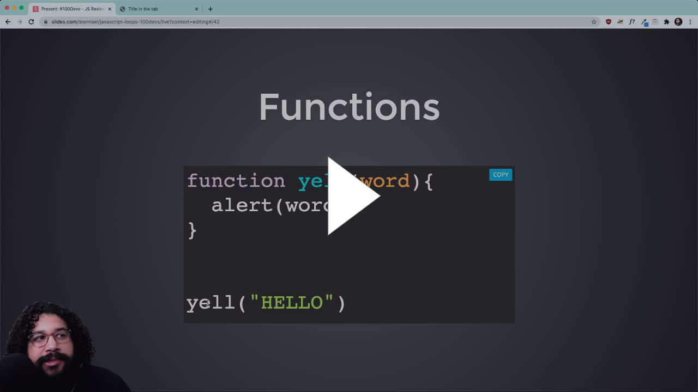
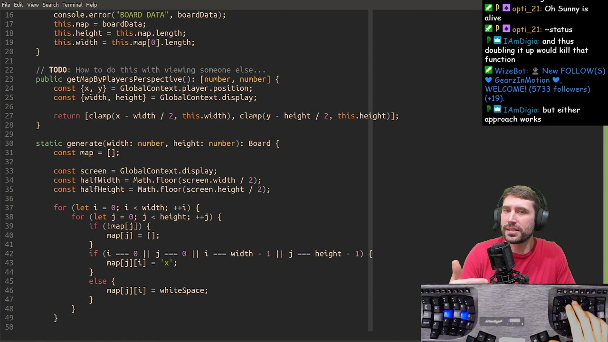
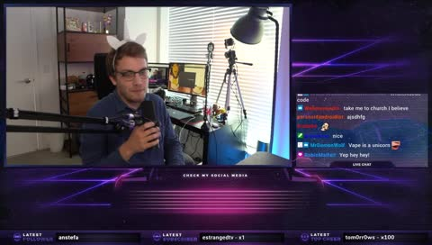

Great background noise
Widely varied content
Good conversation
This talk is focused on JS streams.
Also English focused.
I will mention some others towards the end.
I am probably leaving some people out due to time constraints.
Head to Twitch and find more awesome streams.





Also works at Netflix
but more frontend focused than theprimeagen